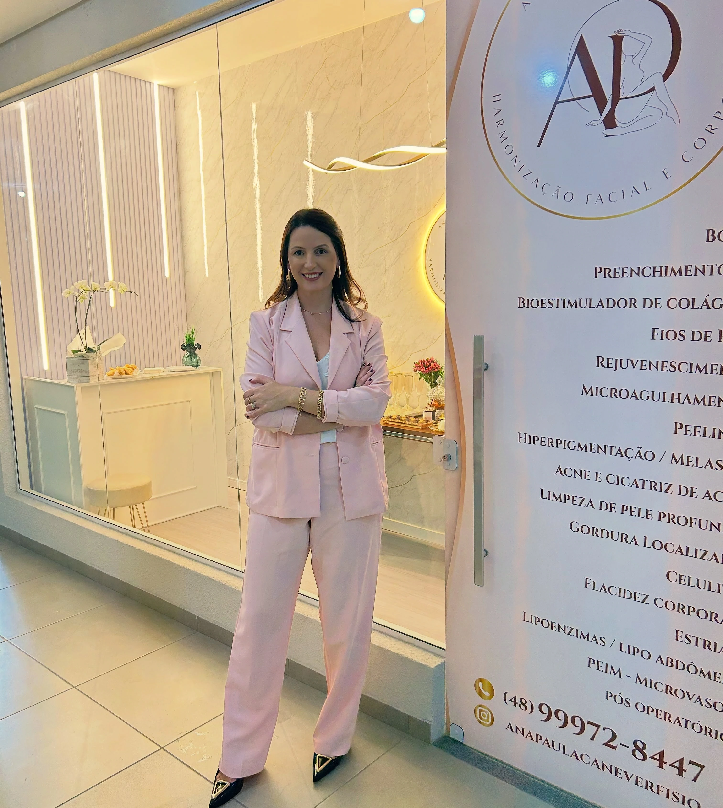
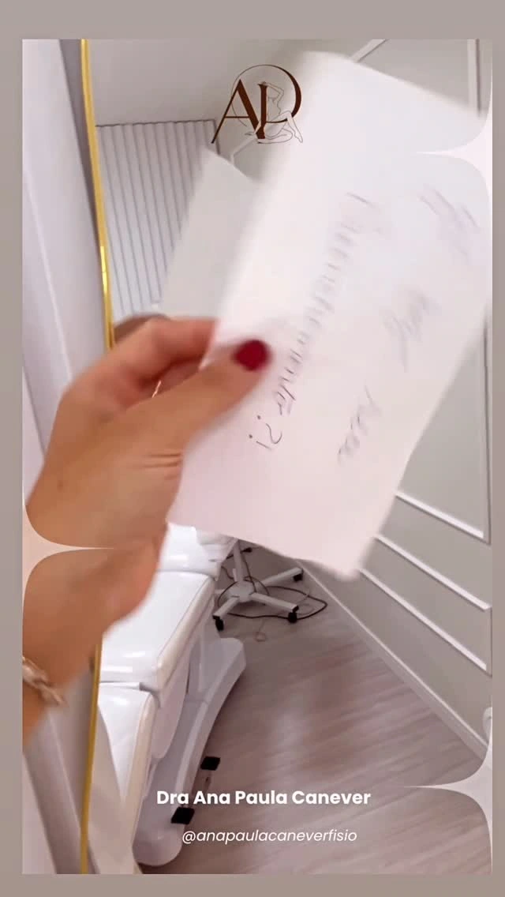

Avaliação
Uma conversa para entender o que você busca e um olhar atento ao seu rosto e ao seu corpo. Nada é decidido antes de ouvir.
Dra. Ana Paula Canever · Estética avançada · Orleans/SC
Fisioterapia dermatofuncional, terapia manual e harmonização facial e corporal. Você conversa com a Dra. Ana Paula, ela avalia o seu caso e propõe o cuidado que faz sentido.

Como ela cuida
O perfil da Dra. Ana Paula fala de fisioterapia dermatofuncional, de terapia manual e de harmonização facial e corporal. O ponto de partida é sempre o mesmo: olhar para você, ouvir o que você busca e só então propor um caminho.
Não é um pacote pronto. É uma avaliação individual, com explicação clara do que faz sentido no seu caso e do que pode esperar.
O caminho
Uma conversa para entender o que você busca e um olhar atento ao seu rosto e ao seu corpo. Nada é decidido antes de ouvir.
A partir da avaliação, um plano individual, explicado com clareza: o que faz sentido agora, o que pode esperar e o que não é indicado para você.
O cuidado acontece de acordo com o plano combinado, com terapia manual e as técnicas que a Dra. indicar para o seu caso.
A conversa continua: dúvidas e ajustes fazem parte do cuidado. Os resultados variam de pessoa para pessoa.
Etapas descritas em termos gerais, a validar com a Dra.
Duas frentes
Serviço a confirmar
Harmonização facial e corporal, fisioterapia dermatofuncional e terapia manual. Quais cuidados fazem sentido para você, a Dra. Ana Paula define na avaliação, olhando para o conjunto e para o que você quer.
Serviço a confirmar
O perfil traz publicações sobre o cuidado depois de uma cirurgia. Cada recuperação é de uma pessoa, então o acompanhamento é individual e segue a orientação de quem acompanha o seu caso.
A clínica
Fachada de vidro, ambiente claro e o monograma AP na entrada. O perfil apresentou o espaço em outubro de 2026; a data da inauguração e os serviços em vigor serão confirmados com a Dra.

Dúvidas
É uma conversa com avaliação: você conta o que busca, a Dra. observa e explica as possibilidades. Duração, valores e demais detalhes você confirma pelo WhatsApp.
O cuidado depende de cada caso. Conte, na mensagem, o que você precisa e a Dra. orienta sobre a avaliação. A conduta é sempre individual.
Por uma mensagem curta no WhatsApp. O endereço e os horários serão confirmados pela clínica.
Contato